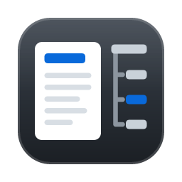

Each option is one 1024 px master on the macOS Big Sur grid (an 824 px rounded body, 100 px margin). The
sizes row is that master rasterized at 256, 64, 32 and 16 px, then the 16 px icon magnified six times, for the macOS art and
for the Windows art. Windows uses the same art with the body cropped to fill the square (viewBox="100 100 824 824"),
so the title bar and taskbar below show that crop. Studio light palette: accent #0969da, accent-soft
#b6d4f5, line #d8dee4.
The accent rounded square from the chrome mock, carrying a bold white md in JetBrains Mono ExtraBold (outlined to paths), letters pulled together. The same mark the empty state draws dashed, made solid. Master: option-a.svg.
Windowstitle bar at 16 px, taskbar at 32 px, between two placeholder apps
macOS Dock64 px with the Big Sur grid margin, between two placeholder apps
A white page with a folded corner on the accent square, a bold accent # (the markdown heading mark, JetBrains Mono ExtraBold outlined) and two text lines. Says “a document” first, “markdown” second. Master: option-b.svg.
Windowstitle bar at 16 px, taskbar at 32 px, between two placeholder apps
macOS Dock64 px with the Big Sur grid margin, between two placeholder apps
The app’s own layout in miniature: a page on the left with an accent heading bar, and on the right a tree trunk with a group header and three rows, the selected one in accent. Graphite body so the white page carries it. Master: option-c.svg.

Windowstitle bar at 16 px, taskbar at 32 px, between two placeholder apps
macOS Dock64 px with the Big Sur grid margin, between two placeholder apps